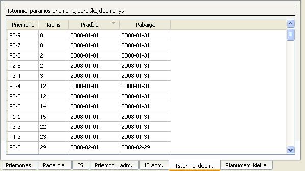

Naudojantis šia sąsaja, galima:
- Pridėti naują suadministruotos paramos priemonės informaciją paspaudus apatinę lentelės eilutę „Pridėti“ bei suvedus reikiamus duomenis;
- Ištrinti vienos ar kelių suadministruotų paramos priemonių istorinius duomenis juos pažymėjus, atidarius kontekstinį meniu ir paspaudus punktą „Pašalinti“;
- Ištrinti vienos ar kelių suadministruotų paramos priemonių istorinius duomenis juos pažymėjus ir paspaudus Vald+-;
- Pakeisti suadministruotos paramos priemonės informaciją, dukart spustelėjus ant lauko, kurį norima pakeisti.

Pastabos
- Keli tos pačios paramos priemonės duomenų intervalai gali kirstis tik tuomet, jei vienas jų pilnai priklauso kitam. Jei kirsis kitaip, tai įvestas įrašas bus pažymėtas kaip nekorektiškas ir į skaičiavimus toks įrašas įtrauktas nebus.
- Jei vienas ar keli tos pačios paramos priemonės duomenų datos intervalai patikslina kitą (pilnai priklauso tam intervalui), tikslinančiųjų įrašų suadministruotų paramos priemonių kiekių suma turi būti lygi juos apimančio įrašo suadministruotų paramos priemonių kiekiui. Jei šis skaičius nesutaps, tikslinantieji intervalai bus pažymėti kaip nekorektiški ir skaičiavimai remsis tik juos apimančiu įrašu.
- Nekorektiškų įrašų fonas yra rausvos spalvos.
- Įvedama paraiškos priemonė turi egzistuoti.
- Įvedus įrašo paraiškos priemonės pavadinimą, netušti intervalo pradžios ir pabaigos laukai bus automatiškai užpildyti pagal anksčiau ėjusius šios priemonės įrašus, o jei tokių nėra - tai pagal dabartinį rezultatų rodymo granuliarumą ir istorinių duomenų intervalo ribas.
- Įvedamiems intervalams nėra būtina tiksliai prasidėti mėnesio/savaitės pradžia, o baigtis - atitinkamo vieneto pabaiga. Jokių papildomų reikalavimų įvedamiems įrašų intervalams nėra.